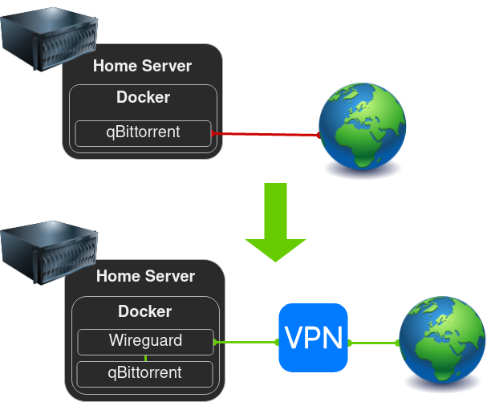

VPN Route

This setup allows you to route containers through a VPN and protect yourself from your ISP.
This guide is the basic step-by-step version of great blog posts by Spad and Tokugero which also contain more advanced information.
qBittorrent and Mullvad are used in this guide as an example, but you can route any container the same way, and use any VPN service that supports Wireguard.
Requirements
- A working instance of qBittorrent
Initial VPN Wireguard Client Configuration
Configure your VPN Wireguard Client according to the Wireguard documentation.
vpn:
image: ghcr.io/linuxserver/wireguard
container_name: vpn
cap_add:
- NET_ADMIN
- SYS_MODULE
environment:
- PUID=1000
- PGID=1000
- TZ=Europe/London
volumes:
- /path/to/appdata/config:/config
- /lib/modules:/lib/modules
restart: unless-stopped
Once done start the container and validate that docker logs vpn contains no errors (Ignore the missing wg0.conf message).
Connecting the Wireguard Client to the VPN
Copy the Wireguard configuration that you get from your VPN provider into a file called wg0.conf and place it in your VPN Wireguard Client's config folder, and make the following changes:
- Remove IPv6 addresses (and ::/0) if you haven't enabled IPv6 in your docker network
- Add the
PostUpandPreDownlines listed belowThe PostUp command adds a killswitch using iptables rules to prevent connections on other interfaces. Connections from LAN networks are still allowed to be able to connect to the services in the containers. The PreDown command cleans up these rules when the VPN goes down.[Interface] PrivateKey = <private-key> Address = <some-address>/32 DNS = <some-address> PostUp = DROUTE=$(ip route | grep default | awk '{print $3}'); HOMENET=192.168.0.0/16; HOMENET2=10.0.0.0/12; HOMENET3=172.16.0.0/12; ip route add $HOMENET3 via $DROUTE;ip route add $HOMENET2 via $DROUTE; ip route add $HOMENET via $DROUTE;iptables -I OUTPUT -d $HOMENET -j ACCEPT;iptables -A OUTPUT -d $HOMENET2 -j ACCEPT; iptables -A OUTPUT -d $HOMENET3 -j ACCEPT; iptables -A OUTPUT ! -o %i -m mark ! --mark $(wg show %i fwmark) -m addrtype ! --dst-type LOCAL -j REJECT PreDown = HOMENET=192.168.0.0/16; HOMENET2=10.0.0.0/12; HOMENET3=172.16.0.0/12; ip route del $HOMENET3 via $DROUTE;ip route del $HOMENET2 via $DROUTE; ip route del $HOMENET via $DROUTE; iptables -D OUTPUT ! -o %i -m mark ! --mark $(wg show %i fwmark) -m addrtype ! --dst-type LOCAL -j REJECT; iptables -D OUTPUT -d $HOMENET -j ACCEPT; iptables -D OUTPUT -d $HOMENET2 -j ACCEPT; iptables -D OUTPUT -d $HOMENET3 -j ACCEPT [Peer] PublicKey = <public-key> AllowedIPs = 0.0.0.0/0 Endpoint = <some-address>:<some-port>
Save the changes and restart the container with docker restart vpn, validate that docker logs vpn contains no errors.
Perform the following validations to check that the VPN works:
- Check that you have connectivity by running
docker exec vpn ping 1.1.1.1 - Check that the VPN is working by running
docker exec vpn curl -s https://am.i.mullvad.net/ip, you should get an IP that is different from your internet's IP.
Routing qBittorrent Through the VPN
Replace the following lines on the qBittorrent container:
ports:
- 6881:6881
- 6881:6881/udp
- 8080:8080
With:
network_mode: "service:vpn"
depends_on:
- vpn
Add the port under the VPN Wireguard Client container:
ports:
- 8080:8080 # qBittorrent
Recreate the VPN Wireguard Client container to apply the changes, then recreate the qBittorrent container which depends on the VPN.
Perform the following validations to check that the VPN works:
- Check that the VPN is working by running
docker exec qbittorrent curl -s https://am.i.mullvad.net/ipand make sure you don't get your internet's IP. - Check that qBittorrent's Web Administration interface is working by browsing http://
<server-ip>:8080.
Configuring Other Containers
Now that qBittorrent is routed through the VPN, other containers need to be configured with the change.
Instead of qbittorrent they will need to use vpn to reach the qBittorrent container.
SWAG
Edit your qbittorrent.subdomain.conf or qbittorrent.subfolder.conf in SWAG's config folder under config/nginx/proxy-confs/.
Replace all occurrences of set $upstream_app qbittorrent; with set $upstream_app vpn;.
Restart the SWAG to apply the changes with docker restart swag.
Sonarr / Radarr
Under Settings > Download Clients > Click qBittorrent's Download Client > Set Host to vpn > click Test & Save.
Notes
Port forwarding
VPN providers like Mullvad support port forwarding, if your application needs it.
For example in Mullvad > My Account > Manage ports and Wireguard Keys > Follow the instructions to get a port.
Copy the port number you got to qBittorrent > Settings > Connection > Port used for incoming connections.
Restarting order
If you're experiencing problems and you want to restart everything, the correct order is:
- VPN -
docker restart vpn - Containers using the VPN -
docker restart <container>
Can't connect to the Web-UI of routed containers
Make sure that you have added PostUp and PreDown to wg0.conf as detailed in Connecting the Wireguard Client to the VPN.
DNS leaks
If you want to make sure wireguard isn't using your local DNS, you can check it with docker run --network="container:vpn" -it --rm tutum/dnsutils dig google.com.
A DNS leak will have your local DNS under: SERVER: 192.168.1.1#53(192.168.1.1).
You can try one of 2 solutions. (Replace 8.8.8.8 with your DNS of choice)
-
Add the following to the vpn's compose:
dns: - 8.8.8.8 -
Add the following to the vpn's compose:
command: bash -c "cp /etc/resolv.conf /tmp/resolv.conf && sed -i 's/127.0.0.11/8.8.8.8/g' /tmp/resolv.conf && cp /tmp/resolv.conf /etc/resolv.conf && /init"